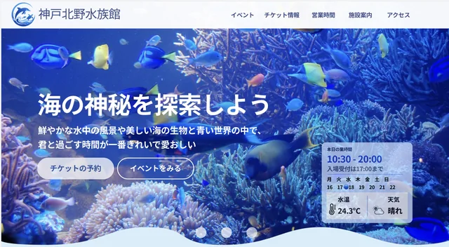
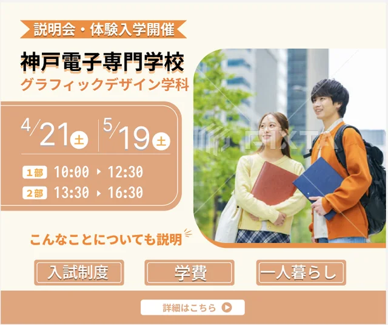
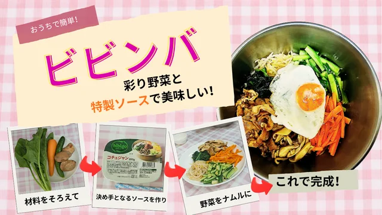

「香り」を視覚化
香りは目に見えないため、写真や
煙、植物などを使い、香りを
感じられるような視覚表現を
工夫しました。
GRAPHIC DESIGN/ZINE BOOK
日本で出会ったさまざまな香りをきっかけに、
故郷ミャンマーの風景や家族との思い出がよみがえる。
そんな「香りと記憶のつながり」を一冊のZINEに
まとめました。
香りは、目には見えないけれど、ふとした瞬間に記憶を呼び起こし、
遠く離れた場所へ心を連れて行ってくれます。
このZINEでは、日本で出会った香りを通して、ミャンマーの風景や家族との思い出を
振り返りました。雨の香り、街の香り、お寺のお線香、桜葉の香りなど、日常の中で
感じた香りを自分自身の記憶と重ねながら表現しています。
香りは目に見えないため、写真や
煙、植物などを使い、香りを
感じられるような視覚表現を
工夫しました。
日本で感じた香りから、
ミャンマーの記憶へとつながる
構成にし、二つの国を「香り」と
「記憶」で結びました。
紙やテープ、水彩風のイラストを
取り入れ、余白を活かすこと
で、個人的な記憶を静かにた
どるような温かい雰囲気を
表現しました。
国や場所が違っていても、
香りを通して記憶がつながる感覚を読者にも感じてもらえる作品を目指しました。

Web Design
海の世界をテーマにし、
楽しく回遊できる構成を
意識してデザインしました。
使用ツール

Graphic Design
情報を整理し、写真と
タイポグラフィで
伝わるデザインにしました。
使用ツール

Video / Visual
写真・文字・動きを組み合わせ、
楽しく分かりやすく伝わる映像を
制作しました。
使用ツール